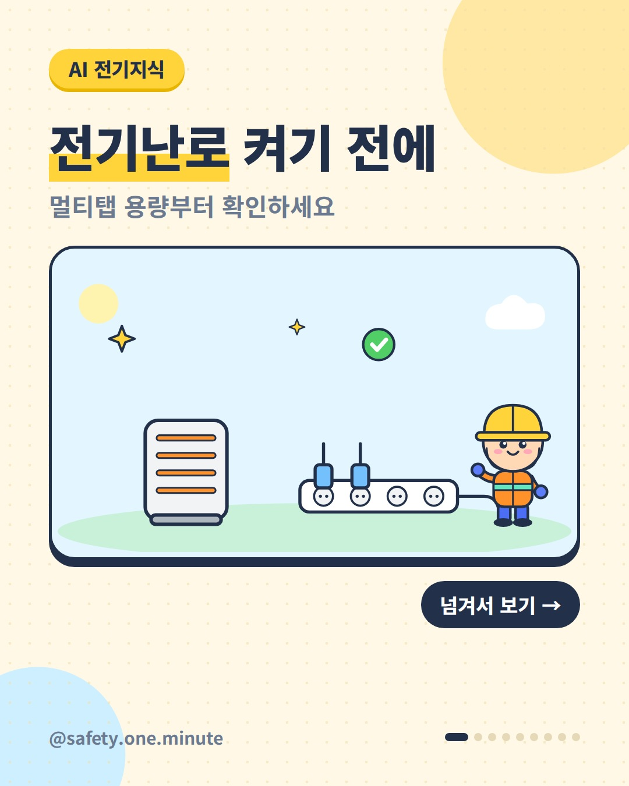
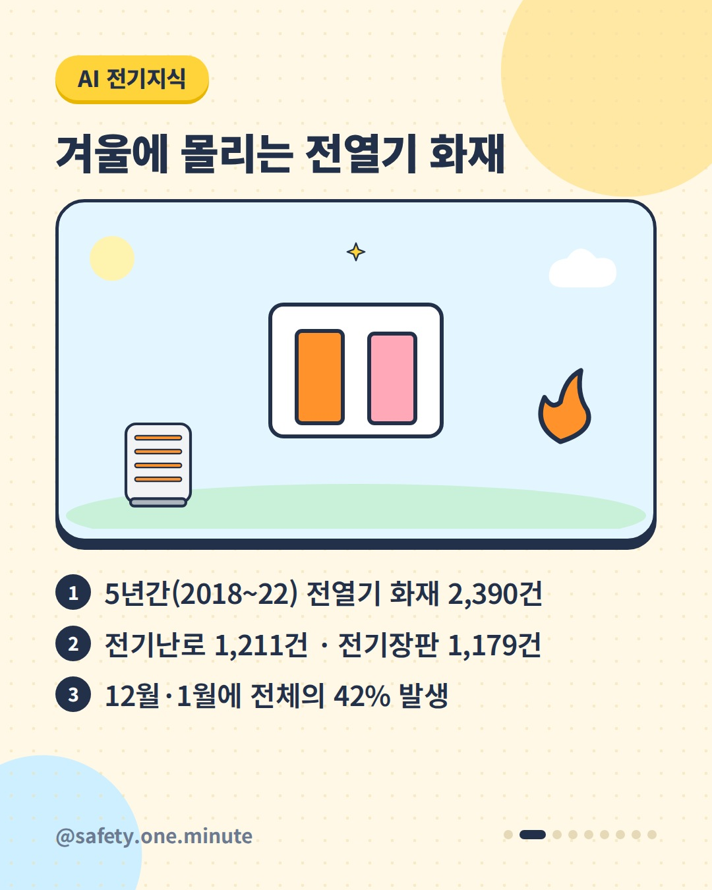
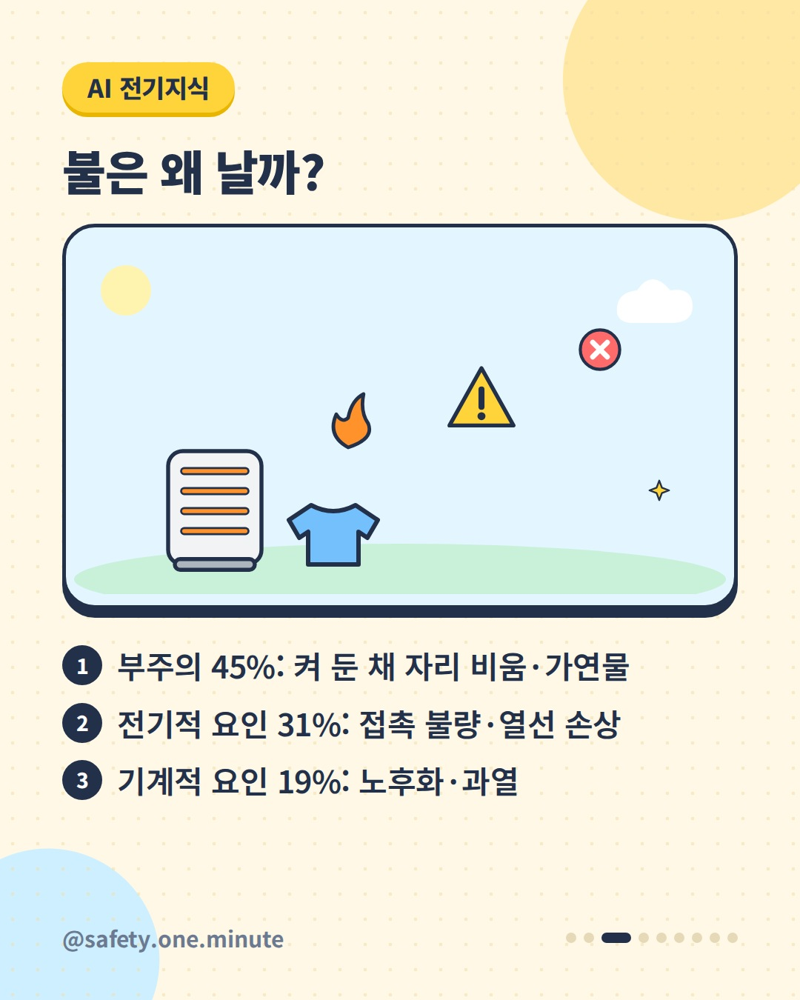
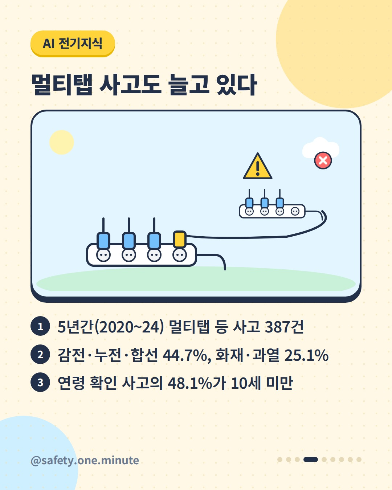
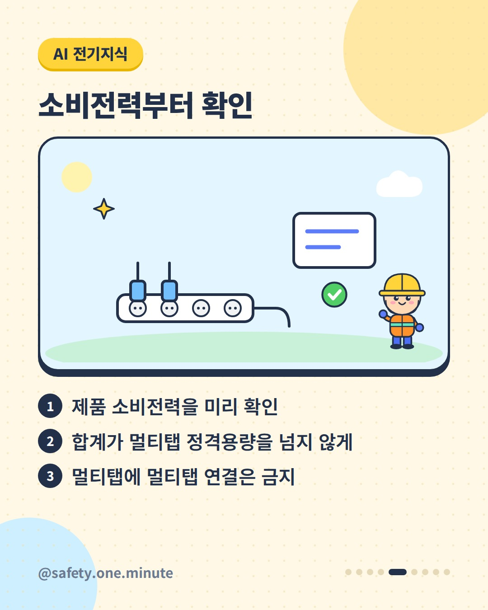
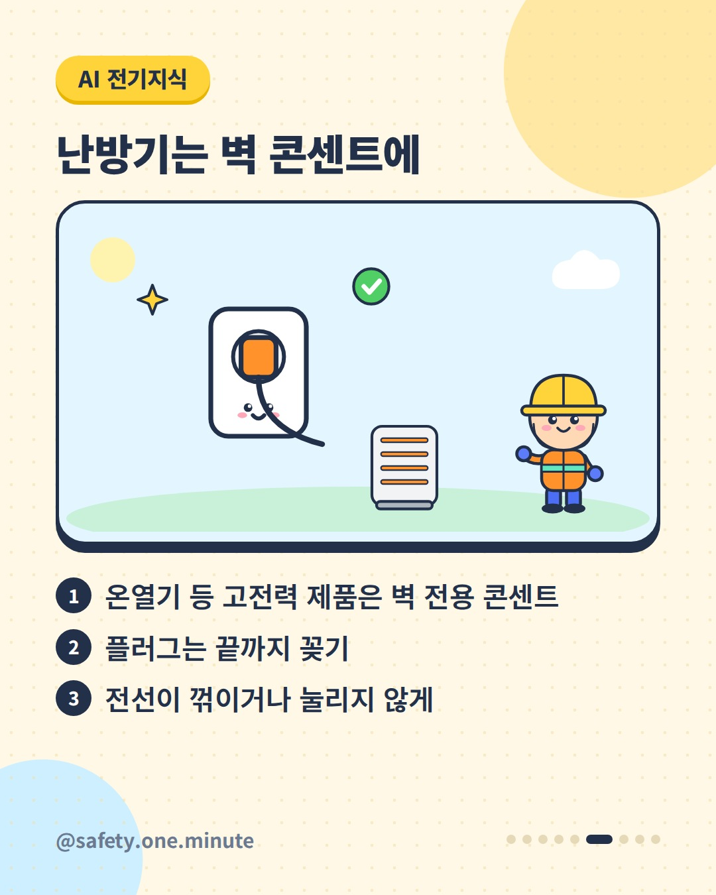
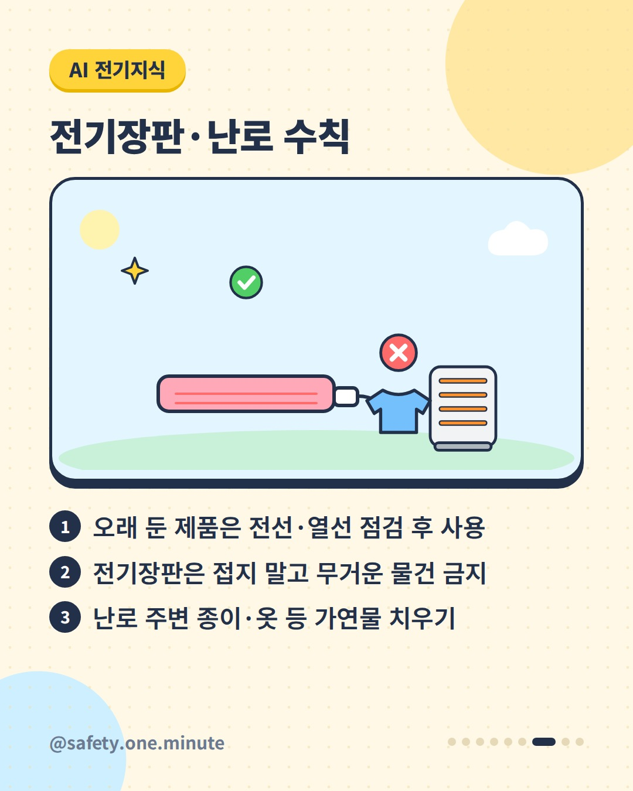
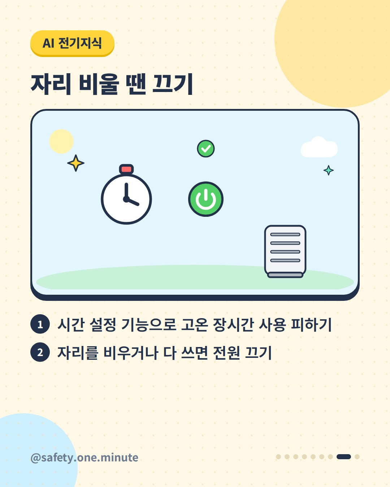
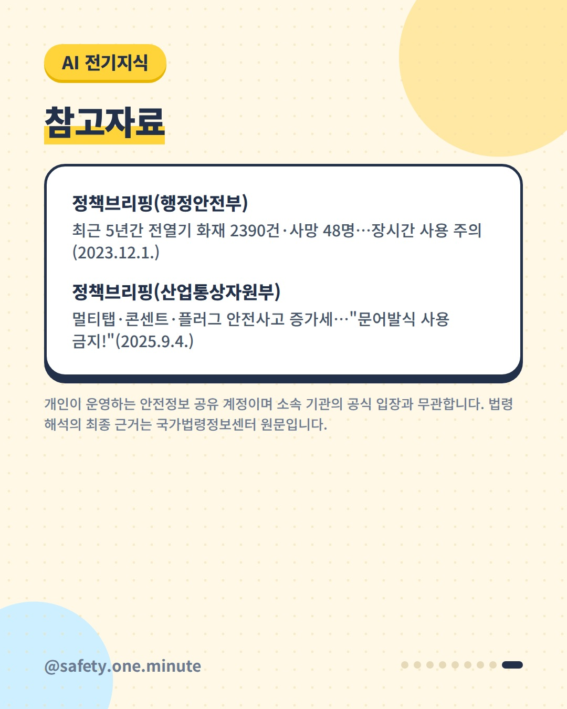

전기난로 켜기 전에 — 9장 (4:5)









캡션
전기난로·전기장판 꺼내셨나요? 멀티탭부터 한번 보세요. 행정안전부에 따르면 2018~2022년 5년간 전열기 화재는 2,390건(전기난로 1,211건, 전기장판 1,179건)이었고, 12월과 1월에 42%가 몰렸습니다. 원인은 켜 둔 채 자리를 비우거나 가연물을 가까이 두는 부주의가 45%로 가장 많았습니다. 산업통상자원부에 따르면 2020~2024년 멀티탭 등 안전사고는 387건으로 해마다 늘었습니다. 연령이 확인된 사고 중 48.1%(115건)는 10세 미만 어린이였습니다. 이것만 챙기세요. ✔ 제품 소비전력을 확인하고 멀티탭 정격용량을 넘지 않게 ✔ 멀티탭에 멀티탭 연결 금지 ✔ 온열기 등 고전력 제품은 벽 전용 콘센트에 ✔ 오래 둔 제품은 전선·열선 점검 후 사용, 전기장판은 접지 않기 ✔ 난로 주변 가연물 치우기, 자리를 비우면 전원 끄기 출처: - 행정안전부(정책브리핑) – 전열기 화재 통계와 안전수칙(2023) - 산업통상자원부(정책브리핑) – 멀티탭·콘센트·플러그 안전사고 주의(2025) 개인이 운영하는 안전정보 공유 계정이며 소속 기관의 공식 입장과 무관합니다. 법령 해석의 최종 근거는 국가법령정보센터 원문입니다. #전기안전 #겨울철화재예방 #전기난로 #전기장판 #멀티탭 #생활안전